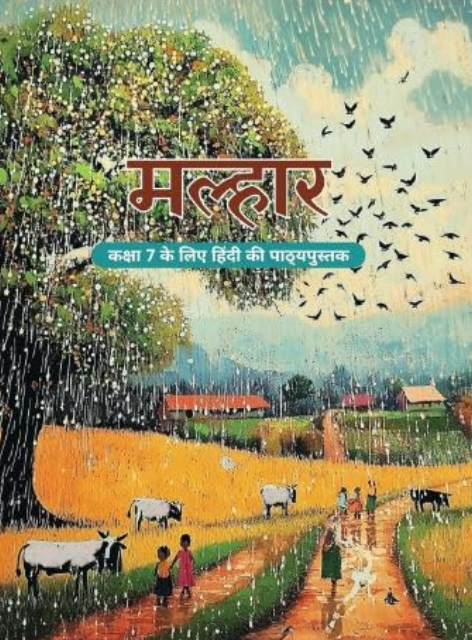

Free Chapter-wise NCERT Solutions | Latest CBSE Syllabus 2026

Access free chapter-wise NCERT Solutions for Class 7 Hindi मल्हार. Every solution is prepared according to the latest CBSE syllabus to help students understand concepts, complete homework and prepare for exams.
“मल्हार” कक्षा 7 की नवीन NCERT हिंदी पाठ्यपुस्तक है, जिसे विद्यार्थियों में हिंदी भाषा, साहित्य और अभिव्यक्ति की समझ विकसित करने के उद्देश्य से तैयार किया गया है। यह पुस्तक विभिन्न साहित्यिक विधाओं के माध्यम से विद्यार्थियों को रोचक, संवेदनशील और अर्थपूर्ण पाठ्य-अनुभव प्रदान करती है।
मल्हार में कविताओं, लोककथाओं, कहानियों, निबंधों, साक्षात्कारों और पदों का सुंदर समावेश किया गया है। पाठ विद्यार्थियों को केवल पढ़ने और प्रश्नों के उत्तर देने तक सीमित नहीं रखते, बल्कि उन्हें विचार करने, भावों को समझने, भाषा का प्रभावी प्रयोग करने और अपने अनुभवों को स्पष्ट रूप से व्यक्त करने के अवसर भी देते हैं।
मल्हार में कुल 10 अध्याय हैं। इनमें विभिन्न प्रकार की कविताएँ, लोककथाएँ, गद्य रचनाएँ, साक्षात्कार और भक्ति साहित्य शामिल हैं।
| अध्याय | पाठ का नाम | विधा |
|---|---|---|
| 1 | माँ, कह एक कहानी | कविता |
| 2 | तीन बुद्धिमान | लोककथा |
| 3 | फूल और काँटा | कविता |
| 4 | पानी रे पानी | निबंध |
| 5 | नहीं होना बीमार | कहानी |
| 6 | गिरिधर कविराय की कुंडलियाँ | कविता |
| 7 | वर्षा-बहार | कविता |
| 8 | बिरजू महाराज से साक्षात्कार | साक्षात्कार |
| 9 | चिड़िया | कविता |
| 10 | मीरा के पद | पद |
मल्हार विद्यार्थियों को हिंदी भाषा और साहित्य से सहज एवं रोचक ढंग से जोड़ती है। विभिन्न साहित्यिक विधाओं के अध्ययन के माध्यम से विद्यार्थी भाषा की सुंदरता, भावों की गहराई और जीवन से जुड़े अनुभवों को समझते हैं। पुस्तक का अध्ययन उनकी भाषा-अभिव्यक्ति के साथ-साथ कल्पनाशक्ति, संवेदनशीलता, चिंतन और रचनात्मकता को भी विकसित करता है।
| पुस्तक का नाम | मल्हार (Malhar) |
|---|---|
| विषय | हिंदी |
| कक्षा | 7 |
| प्रकाशक | राष्ट्रीय शैक्षिक अनुसंधान और प्रशिक्षण परिषद (NCERT) |
| शैक्षणिक सत्र | 2026–27 |
| कुल अध्याय | 10 |
कक्षा 7 हिंदी की नई NCERT पाठ्यपुस्तक का नाम मल्हार है।
मल्हार कक्षा 7 के विद्यार्थियों के लिए तैयार की गई हिंदी पाठ्यपुस्तक है।
यह पुस्तक राष्ट्रीय शैक्षिक अनुसंधान और प्रशिक्षण परिषद (NCERT) द्वारा प्रकाशित की गई है।
मल्हार में कुल 10 अध्याय हैं, जिनमें विभिन्न प्रकार की साहित्यिक रचनाएँ शामिल हैं।
पुस्तक में कविताएँ, कहानियाँ, लोककथाएँ, निबंध, साक्षात्कार और पद जैसी विभिन्न साहित्यिक विधाओं को शामिल किया गया है।
इसका उद्देश्य विद्यार्थियों में हिंदी भाषा के प्रति रुचि विकसित करने के साथ-साथ पठन-बोध, चिंतन, रचनात्मकता और अभिव्यक्ति को बढ़ावा देना है।
नहीं। पुस्तक साहित्य के साथ-साथ विद्यार्थियों की भाषाई समझ, विचार-क्षमता, कल्पनाशक्ति और अभिव्यक्ति कौशल को विकसित करने पर भी जोर देती है।
कविताएँ विद्यार्थियों को भाव, कल्पना, प्रकृति, जीवन और मानवीय संवेदनाओं को समझने तथा भाषा की सुंदरता का अनुभव करने में सहायता करती हैं।
हाँ। पुस्तक में लोककथा जैसी रचनाओं के माध्यम से विद्यार्थियों को लोकजीवन, परंपरा और सांस्कृतिक अनुभवों से परिचित कराया गया है।
यह पुस्तक पठन, लेखन, शब्दावली, पठन-बोध, मौखिक अभिव्यक्ति, रचनात्मक चिंतन और आलोचनात्मक सोच जैसे कौशल विकसित करने में सहायक है।
हाँ। पाठों और गतिविधियों के माध्यम से विद्यार्थियों को अपने विचार, भावनाएँ और अनुभव स्पष्ट एवं प्रभावी ढंग से व्यक्त करने के अवसर मिलते हैं।
'मीरा के पद' विद्यार्थियों को भक्ति काव्य, भावाभिव्यक्ति और हिंदी साहित्य की समृद्ध परंपरा से परिचित कराते हैं।
हाँ। यह NCERT की निर्धारित पाठ्यपुस्तक है और इसके पाठों का अध्ययन कक्षा 7 की हिंदी की परीक्षा और पाठ्यक्रम आधारित तैयारी के लिए महत्वपूर्ण है।
हाँ। पुस्तक में विद्यार्थियों को सक्रिय रूप से सीखने, विचार करने, चर्चा करने और पाठ को अपने अनुभवों से जोड़ने के लिए विभिन्न प्रकार के प्रश्न और गतिविधियाँ दी गई हैं।
मल्हार विद्यार्थियों को हिंदी साहित्य और भाषा से जोड़ते हुए उनकी भाषाई दक्षता, संवेदनशीलता, कल्पनाशक्ति, रचनात्मकता और चिंतन क्षमता को विकसित करने में महत्वपूर्ण भूमिका निभाती है।